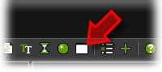
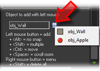
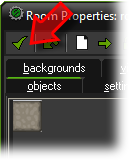

Tutorial
Page 6 of 15
Creating A Room
Now that we have defined our wall and apple, we need to create a room in which to put them.
Rooms are what the player sees when he/she plays the game. Our game will need just one room
but games made with GameMaker can have many different rooms. To create a room, click
on the Resources menu and press Create Room
or click on the corresponding button on the tool-bar:

The room form will appear. At the left there are three tabbed pages: objects, settings, backgrounds.
Make sure objects is selected. At the right there is an empty area that is the actual room. If your
screen is large enough, better scale the form such that the whole room is visible, or use the mouse wheel or
toolbar icons to scale the room itself.
We can now add objects to the room. At the bottom left, click on the menu icon and in the popup menu
select the wall object:

Now click with the left mouse button in the top left of the room area. An instance of the wall object
should appear. Continue adding wall objects until you create a complete boundary around the room. If
you make a mistake you can use the right mouse button to delete instances.
(If you want to do this faster, in the tool-bar set the values of Snap X and Snap Y to 32, the
size of the sprites, now you can draw multiple wall sprites by holding the <Shift> key.)
Next we want to add some apples. Again click on the menu icon and in the pop-up menu
select the apple object. Place two or three apple objects at random places in the room.
That finishes the game. Press the green check-mark sign in the tool-bar of the room form to close it.
